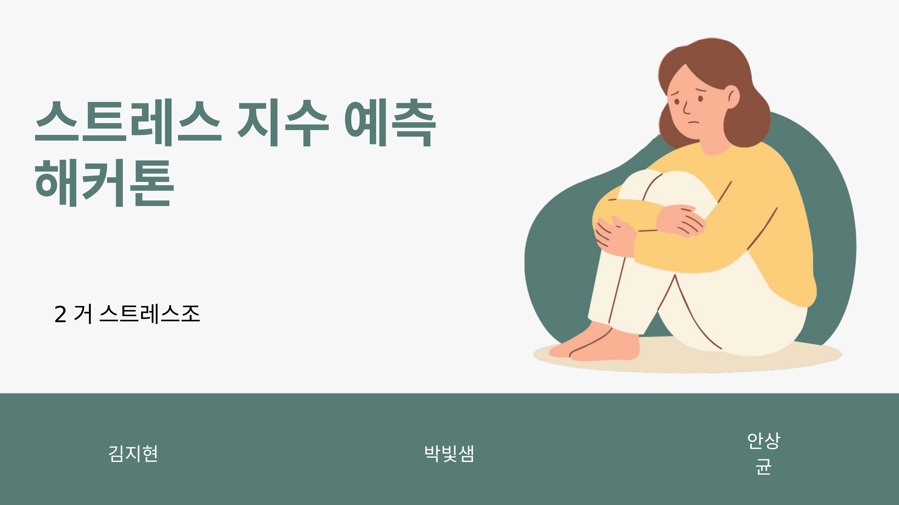
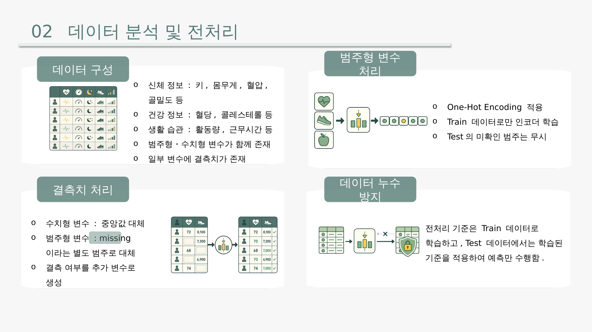
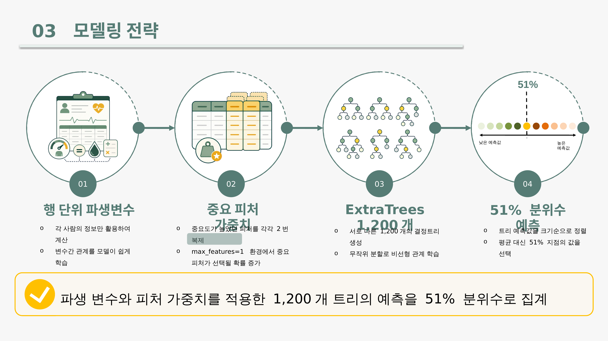

Machine Learning Hackathon
스트레스 지수 예측 해커톤
Weighted Quantile ExtraTrees
개인의 건강・생활습관 데이터를 기반으로 0~1 범위의 스트레스 점수를 예측하는 회귀 모델을 개발한 3인 팀 해커톤 프로젝트입니다. 파생변수 설계, 중요 피처 가중치, ExtraTrees 앙상블, 분위수 예측을 결합해 Public MAE 0.12827을 달성했습니다.
Project Overview
스트레스는 누구나 경험하지만 객관적으로 측정하기는 어렵습니다. 이 프로젝트는 신체 정보(키, 몸무게, 혈압, 골밀도 등), 건강 정보(혈당, 콜레스테롤 등), 생활 습관(활동량, 근무시간 등) 데이터를 활용해 개인별 스트레스 점수를 예측함으로써 예방 중심의 건강 관리를 지원하는 것을 목표로 했습니다. Train 3,000건 × 17개 컬럼, Test 3,000건 × 18개 컬럼 규모의 데이터로 진행됐고, 평가지표는 실제 값과 예측 값의 차이를 절댓값 평균으로 계산하는 MAE(낮을수록 우수)를 사용했습니다.
Slides



Data & Preprocessing
🧩 결측치 처리
수치형 변수는 중앙값으로 대체하고, 범주형 변수는 별도의 "missing" 범주로 대체했습니다. 결측 여부 자체도 추가 변수로 만들어 모델이 활용할 수 있게 했습니다.
🔐 데이터 누수 방지
범주형 변수는 One-Hot Encoding을 적용하되 Train 데이터로만 인코더를 학습하고, Test에서 처음 보는 범주는 무시했습니다. 전처리 기준은 항상 Train에서만 학습하고 Test에는 변환만 적용했습니다.
Modeling Strategy
1️⃣ 행 단위 파생변수
BMI, 맥압, 평균동맥압, 혈압 비율, 콜레스테롤·혈당 비율, 행별 결측치 개수를 개인 정보만으로 생성해, 다른 사람이나 Test 통계를 쓰지 않고도 변수 간 관계를 모델에 전달했습니다.
2️⃣ 중요 피처 가중치
실험에서 중요도가 높았던 평균 근무시간, BMI, 콜레스테롤, 키, 혈당, 몸무게, 골밀도 등을 각각 2회 복제했습니다. 최종 모델이 max_features=1로 분할 후보를 하나만 고르기 때문에, 복제를 통해 중요한 피처가 선택될 확률을 높였습니다.
3️⃣ ExtraTrees 1,200개
ExtraTreesRegressor로 서로 다른 1,200개의 결정트리를 생성해 무작위 분할을 통해 건강・생활 변수 사이의 비선형 관계를 학습했습니다(random_state=42로 재현성 확보).
4️⃣ 51% 분위수 예측
1,200개 트리의 예측값을 단순 평균하지 않고 크기순 정렬 후 51% 지점의 값을 최종 예측값으로 선택했습니다. MAE는 평균보다 중앙값에 가까운 예측에 유리하기 때문에, 여러 실험 끝에 정확히 50%보다 살짝 높은 51% 지점이 가장 안정적이었습니다.
Results
세 명이 각각 파생변수 개발, ExtraTrees 고도화, 대안 모델 탐색을 담당하고 효과가 확인된 전략을 결합해 Weighted Quantile ExtraTrees를 완성했습니다. 최초 제출 0.16868에서 최종 Public MAE 0.12827로 약 23.95% 개선했고, 반복 교차검증 평균 0.14751, 중복 그룹 검증 0.14920으로 안정성을 확인했습니다.
Key Insights
📈 건강 데이터를 더 잘 표현
BMI, 혈압 관계, 대사 비율, 결측치 개수로 원본 변수의 의미를 확장했습니다.
🎯 중요 피처를 더 자주 보게 함
평균 근무시간, BMI, 혈당, 콜레스테롤 등 핵심 지표의 선택 확률을 높였습니다.
📊 평균이 아닌 51% 분위수 선택
MAE에 유리한 중앙값 계열 집계로 트리별 예측의 흔들림을 줄였습니다.
🗂️ 기준 모델 확정 후 실험 누적
같은 형식으로 코드・설정・점수・가설을 기록해 재현 가능한 개선 과정을 만들었습니다.
Team & Collaboration
김지현(팀장, 파생변수・모델 개선), 안상균(대안 모델・튜닝, GitHub&Notion 관리), 박빛샘(발표자료 제작, ExtraTrees・분위수 조정) 3인이 팀을 이뤘습니다. Notion으로 일정과 아이디어・성능을 기록하고, GitHub 저장소로 코드와 실험 결과를 공유했으며, ZEP에서 실시간으로 실험 결과를 비교하고 다음 방향을 정했습니다.
Tech Stack
🤖 Modeling
🛠️ Collaboration
※ Public MAE는 리더보드 공개 점수 기준이며, Private 순위는 별도로 확정되지 않았습니다.